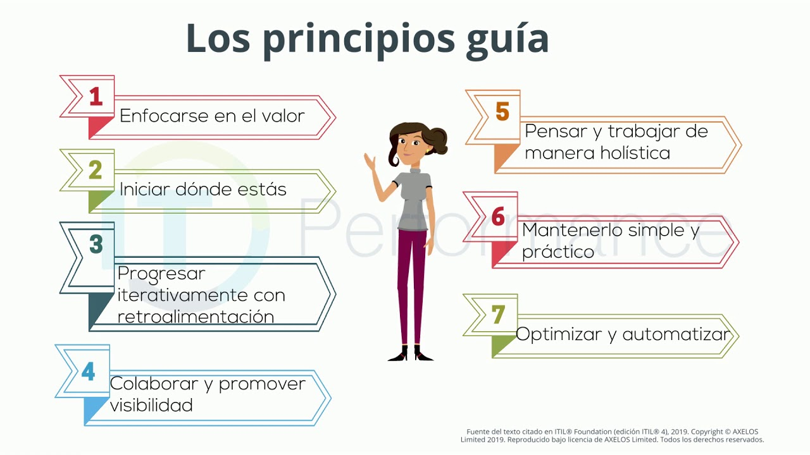
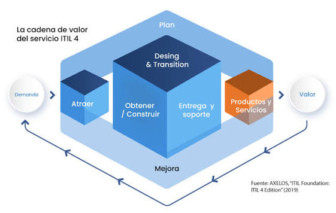

El Sistema de Valor del Servicio (Service Value System o SVS) en ITIL 4 es un modelo que explica cómo deben organizarse y gestionarse los recursos para ofrecer servicios que generen valor. Conecta todos los aspectos de la Gestión de Servicios –personas, procesos, herramientas, gobernanza y mejoras– en un único sistema que respalda la creación de valor a través de los servicios de IT. En términos simples, el SVS muestra cómo una organización transforma la demanda (como necesidades o solicitudes de los usuarios) en resultados (como servicios de IT confiables, soporte o productos digitales).

1. Enfócate en el valor: Todo lo que realice la organización debe aportar valor, directo o indirecto, a los clientes y otras partes interesadas.2. Empieza donde estás: Evalúa y aprovecha los procesos, servicios y recursos que ya tienes antes de crear algo nuevo desde cero.3. Progresa iterativamente con retroalimentación: Divide el trabajo en partes más pequeñas y manejables, y ajusta tus acciones basándote en la evaluación continua.4. Colabora y promueve la visibilidad: Fomenta una cultura de trabajo transparente y colaborativa entre distintos equipos para lograr mejores resultados.5. Piensa y trabaja de forma integral: Reconoce que la organización es un sistema interconectado donde las decisiones y cambios afectan a todas las áreas.6. Manténlo simple y práctico: Elimina los pasos innecesarios y la complejidad; prioriza siempre soluciones que sean eficientes y orientadas al valor.7. Optimiza y automatiza: Maximiza el valor del trabajo de las personas enfocándolas en la toma de decisiones, y utiliza la tecnología para automatizar tareas repetitivas una vez que estén optimizadas.
La gobernanza es el conjunto de procesos, reglas, normas y acciones mediante los cuales se toman y ejecutan decisiones. Involucra la interacción horizontal y colaborativa entre el Estado, el sector privado y la sociedad civil para gestionar asuntos públicos y recursos comunes de manera compartida.

La cadena de valor del servicio es un modelo estratégico que permite a las organizaciones estructurar y evaluar todas sus actividades internas y externas. Su propósito es optimizar los procesos, reducir costos e identificar ventajas competitivas para ofrecer el máximo valor posible al cliente final.